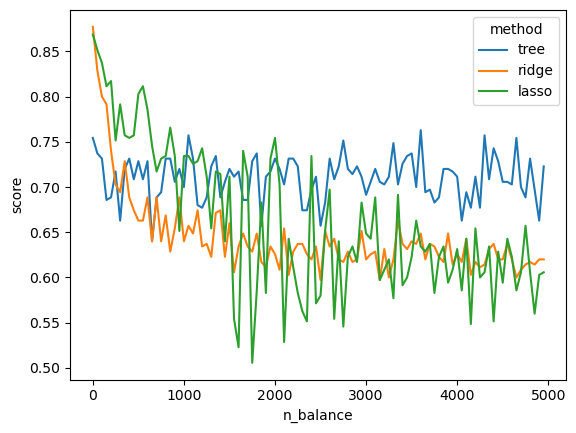

1. 강의영상
https://youtu.be/playlist?list=PLQqh36zP38-xYMQe_6GKus4q8E6c5RNIS&si=QtTWrQUAXDgwhxBp
2. Imports
3. Data
def generating_df(n_balance):
df = pd.read_csv('https://raw.githubusercontent.com/guebin/MP2023/main/posts/employment.csv')
df_balance = pd.DataFrame((np.random.randn(500,n_balance)).reshape(500,n_balance)*1,columns = ['balance'+str(i) for i in range(n_balance)])
return pd.concat([df,df_balance],axis=1)| toeic | gpa | employment | balance0 | balance1 | balance2 | balance3 | balance4 | balance5 | balance6 | balance7 | balance8 | balance9 | |
|---|---|---|---|---|---|---|---|---|---|---|---|---|---|
| 0 | 135 | 0.051535 | 0 | 0.201954 | 0.913711 | -0.589805 | 0.316196 | 1.285975 | 0.094634 | 1.781618 | -0.810583 | 1.784278 | -0.604258 |
| 1 | 935 | 0.355496 | 0 | -0.290880 | -0.073337 | -0.570444 | -1.390016 | 0.144310 | -0.247668 | 1.736824 | -0.766542 | -0.279784 | -1.525845 |
| 2 | 485 | 2.228435 | 0 | 1.333870 | 0.997310 | 1.500856 | 0.774262 | -0.919978 | -0.202276 | 1.419562 | -0.185264 | -0.782524 | 1.766982 |
| 3 | 65 | 1.179701 | 0 | 1.764506 | 1.164117 | -0.967719 | -2.201651 | 0.655650 | 0.655106 | -1.416480 | -0.927737 | 0.247814 | -1.238919 |
| 4 | 445 | 3.962356 | 1 | -0.413176 | 0.988229 | 0.564624 | 0.885567 | 0.560682 | -2.880517 | 0.714108 | 0.522645 | -1.822700 | 0.794012 |
| ... | ... | ... | ... | ... | ... | ... | ... | ... | ... | ... | ... | ... | ... |
| 495 | 280 | 4.288465 | 1 | 0.431759 | 2.153168 | 1.579232 | -1.154426 | 0.208956 | -0.549120 | 1.676330 | -0.015323 | 1.859426 | -0.918818 |
| 496 | 310 | 2.601212 | 1 | 0.716791 | -0.428856 | -0.770143 | -0.362971 | 1.191776 | -0.763958 | -0.071902 | 1.107869 | 0.963393 | -0.996926 |
| 497 | 225 | 0.042323 | 0 | 1.019516 | -0.765429 | 1.868903 | -0.285379 | 0.080620 | 2.006618 | -1.155571 | -0.395149 | -0.430279 | 0.712161 |
| 498 | 320 | 1.041416 | 0 | -1.195398 | 0.470352 | -0.374949 | -0.397581 | 1.556866 | 0.281161 | -0.217248 | -1.649043 | 0.252582 | 0.817852 |
| 499 | 375 | 3.626883 | 1 | -0.445898 | 0.390302 | -0.403406 | -0.528904 | 1.745216 | 1.194092 | 0.627451 | 0.583121 | 1.058502 | -1.095658 |
500 rows × 13 columns
4. 분석
- 분석1: 의사결정나무
## step1 -- pass
## step2
predictr = sklearn.tree.DecisionTreeClassifier(random_state=42)
## step3
predictr.fit(X,y)
## step4
df_train['employment'] = predictr.predict(X)
df_test['employment'] = predictr.predict(XX)
#--#
print(f'train_score = {predictr.score(X,y):.4f}')
print(f'test_score = {predictr.score(XX,yy):.4f}')train_score = 1.0000
test_score = 0.7057- 분석2: 로지스틱 + Ridge
:::{.callout-note} ## LogisticRegressionCV()에서 solver 선택하는 법
Warning The choice of the algorithm depends on the penalty chosen. Supported penalties by solver: - lbfgs : [‘l2’]
liblinear: [‘l1’, ‘l2’]newton-cg: [‘l2’]newton-cholesky: [‘l2’]sag: [‘l2’]saga: [‘elasticnet’, ‘l1’, ‘l2’]ref: https://scikit-learn.org/stable/modules/generated/sklearn.linear_model.LogisticRegressionCV.html :::‘l1’, ‘l2’]
## step1 -- pass
## step2
predictr = sklearn.linear_model.LogisticRegressionCV(penalty='l2') ## logistic + Ridge
## step3
predictr.fit(X,y)
## step4
df_train['employment'] = predictr.predict(X)
df_test['employment'] = predictr.predict(XX)
#--#
print(f'train_score = {predictr.score(X,y):.4f}')
print(f'test_score = {predictr.score(XX,yy):.4f}')train_score = 0.8733
test_score = 0.8743- 분석3: 로지스틱 + Lasso
## step1 -- pass
## step2
predictr = sklearn.linear_model.LogisticRegressionCV(penalty='l1', solver='liblinear')
## step3
predictr.fit(X,y)
## step4
df_train['employment'] = predictr.predict(X)
df_test['employment'] = predictr.predict(XX)
#--#
print(f'train_score = {predictr.score(X,y):.4f}')
print(f'test_score = {predictr.score(XX,yy):.4f}')train_score = 0.8800
test_score = 0.86865. 연구
- Balance 변수들의 수가 커짐에 따라서 각 방법들(의사결정나무, 로지스틱+Ridge, 로지스틱+Lasso)의 train/test score는 어떻게 변화할까?
- df, predictor -> train_score, test_score 와 같은 함수를 만들자.
def anal(df,predictr):
df_train, df_test = sklearn.model_selection.train_test_split(df, test_size=0.7, random_state=42)
X,y = df_train.drop(['employment'],axis=1), df_train['employment']
XX,yy = df_test.drop(['employment'],axis=1), df_test['employment']
## step1 -- pass
## step2 -- pass
## step3
predictr.fit(X,y)
## step4 -- pass
#--#
return predictr.score(X,y),predictr.score(XX,yy)- 실험해보자.
- 실험결과 정리
df1 = pd.DataFrame(tr, columns = ['tree','ridge','lasso']).eval('dataset = "train"').eval('n_balance=@n_balance_lst')
df1| tree | ridge | lasso | dataset | n_balance | |
|---|---|---|---|---|---|
| 0 | 1.0 | 0.866667 | 0.853333 | train | 0 |
| 1 | 1.0 | 0.773333 | 0.940000 | train | 50 |
| 2 | 1.0 | 0.980000 | 0.933333 | train | 100 |
| 3 | 1.0 | 0.986667 | 1.000000 | train | 150 |
| 4 | 1.0 | 0.886667 | 1.000000 | train | 200 |
| ... | ... | ... | ... | ... | ... |
| 95 | 1.0 | 1.000000 | 1.000000 | train | 4750 |
| 96 | 1.0 | 1.000000 | 1.000000 | train | 4800 |
| 97 | 1.0 | 1.000000 | 0.526667 | train | 4850 |
| 98 | 1.0 | 1.000000 | 1.000000 | train | 4900 |
| 99 | 1.0 | 1.000000 | 0.526667 | train | 4950 |
100 rows × 5 columns
df2 = pd.DataFrame(tst, columns = ['tree','ridge','lasso']).eval('dataset = "test"').eval('n_balance = @n_balance_lst')
df2| tree | ridge | lasso | dataset | n_balance | |
|---|---|---|---|---|---|
| 0 | 0.754286 | 0.877143 | 0.868571 | test | 0 |
| 1 | 0.762857 | 0.725714 | 0.857143 | test | 50 |
| 2 | 0.754286 | 0.805714 | 0.825714 | test | 100 |
| 3 | 0.720000 | 0.748571 | 0.831429 | test | 150 |
| 4 | 0.731429 | 0.714286 | 0.748571 | test | 200 |
| ... | ... | ... | ... | ... | ... |
| 95 | 0.674286 | 0.640000 | 0.622857 | test | 4750 |
| 96 | 0.714286 | 0.597143 | 0.591429 | test | 4800 |
| 97 | 0.637143 | 0.602857 | 0.505714 | test | 4850 |
| 98 | 0.694286 | 0.591429 | 0.631429 | test | 4900 |
| 99 | 0.705714 | 0.608571 | 0.505714 | test | 4950 |
100 rows × 5 columns
- ridge랑 lasso는 score가 갈수록 현저히 떨어진다.
pd.concat([df1, df2]).set_index(['dataset','n_balance']).stack().reset_index().set_axis(['dataset','n_balance','method','score'], axis=1)| dataset | n_balance | method | score | |
|---|---|---|---|---|
| 0 | train | 0 | tree | 1.000000 |
| 1 | train | 0 | ridge | 0.866667 |
| 2 | train | 0 | lasso | 0.853333 |
| 3 | train | 50 | tree | 1.000000 |
| 4 | train | 50 | ridge | 0.773333 |
| ... | ... | ... | ... | ... |
| 595 | test | 4900 | ridge | 0.591429 |
| 596 | test | 4900 | lasso | 0.631429 |
| 597 | test | 4950 | tree | 0.705714 |
| 598 | test | 4950 | ridge | 0.608571 |
| 599 | test | 4950 | lasso | 0.505714 |
600 rows × 4 columns
df1= pd.DataFrame(tr,columns=['tree','ridge','lasso']).eval('dataset = "train"').eval('n_balance = @n_balance_lst')
df2= pd.DataFrame(tst,columns=['tree','ridge','lasso']).eval('dataset = "test"').eval('n_balance = @n_balance_lst')
result_df = pd.concat([df1,df2]).set_index(['dataset','n_balance']).stack().reset_index().set_axis(['dataset','n_balance','method','score'],axis=1)<Axes: xlabel='n_balance', ylabel='score'>
| dataset | n_balance | method | score | |
|---|---|---|---|---|
| 300 | test | 0 | tree | 0.754286 |
| 301 | test | 0 | ridge | 0.877143 |
| 302 | test | 0 | lasso | 0.868571 |
| 303 | test | 50 | tree | 0.762857 |
| 304 | test | 50 | ridge | 0.725714 |
| ... | ... | ... | ... | ... |
| 595 | test | 4900 | ridge | 0.591429 |
| 596 | test | 4900 | lasso | 0.631429 |
| 597 | test | 4950 | tree | 0.705714 |
| 598 | test | 4950 | ridge | 0.608571 |
| 599 | test | 4950 | lasso | 0.505714 |
300 rows × 4 columns
df_ = np.array([[anal(generating_df(b),predictr) for predictr in predictrs] for b in range(0,100,50)])
df_array([[[1. , 0.75428571],
[0.86666667, 0.87714286],
[0.85333333, 0.87142857]],
[[1. , 0.74285714],
[0.93333333, 0.83142857],
[0.87333333, 0.87142857]]])| toeic | gpa | employment | balance0 | balance1 | |
|---|---|---|---|---|---|
| 0 | 135 | 0.051535 | 0 | -1.007441 | -0.522833 |
| 1 | 935 | 0.355496 | 0 | -0.441027 | 0.367165 |
| 2 | 485 | 2.228435 | 0 | 0.793840 | -1.796588 |
| 3 | 65 | 1.179701 | 0 | -0.023520 | -0.074258 |
| 4 | 445 | 3.962356 | 1 | -0.802179 | 0.669743 |
| ... | ... | ... | ... | ... | ... |
| 495 | 280 | 4.288465 | 1 | 1.048698 | 0.464401 |
| 496 | 310 | 2.601212 | 1 | 0.464867 | -0.826916 |
| 497 | 225 | 0.042323 | 0 | 0.095497 | -0.008625 |
| 498 | 320 | 1.041416 | 0 | 0.452554 | -0.639249 |
| 499 | 375 | 3.626883 | 1 | -0.998647 | -1.187848 |
500 rows × 5 columns